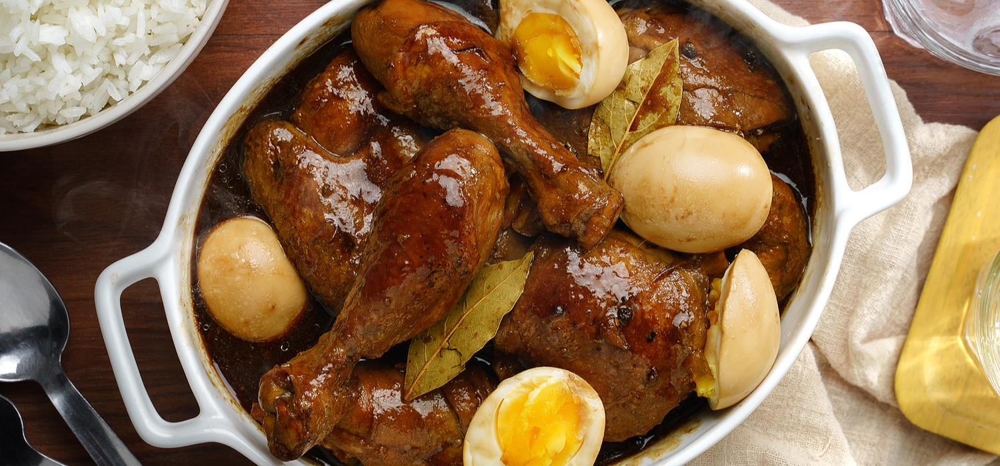

Chicken Adobo with Egg and Oyster Sauce

Description
A Philippine dish of fish or meat usually marinated in a sauce containing vinegar and garlic, browned in fat, and simmered in the marinade. : a spicy marinade used in Latin American cuisine and usually containing vinegar, garlic, and chili peppers.
Ingredients
- 0.5kg chicken leg quarters, cut into pieces
- 1 sachet MAGGI Oyster Sauce
- 2 tbsp Soy Sauce
- 6 cloves Garlic
- 3 tbsp White Vinegar
- 1 cup Water
- 1 tbsp Black Peppercorn
- 2 pcs Bay Leaf
- 1 tbsp Vegetable Oil
- 3 pcs Eggs
Steps
- Combine chicken, MAGGI® Oyster Sauce, soy sauce, garlic, vinegar, water, peppercorn and bay leaves in a pot. Cover and simmer for 15 minutes. Strain chicken and set aside. 20mins
- Sauté chicken and garlic in oil until golden brown. 5 mins
- Pour cooking liquid and simmer until sauce is thick and coating the chicken. Transfer on a serving plate and serve. 5 mins.